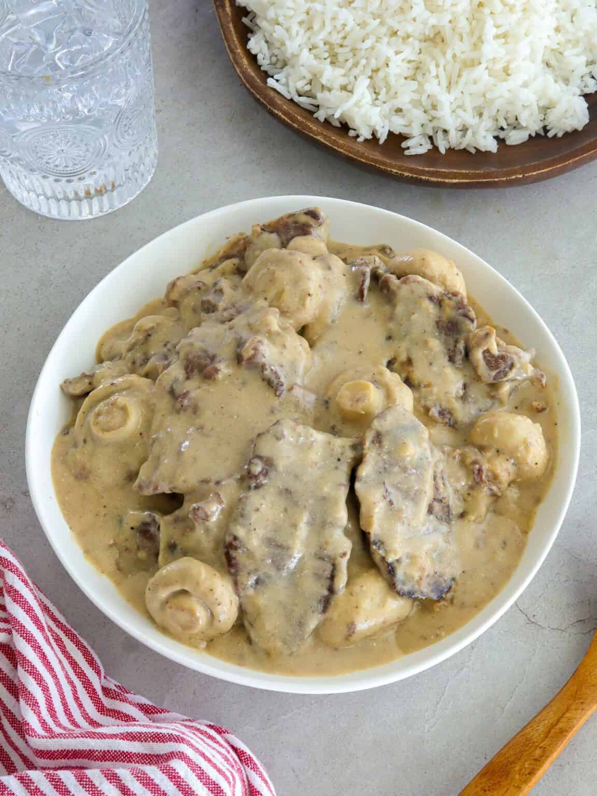

Beef in Creamy Mushroom

Ingredients
| Oil |
| Beef |
| Mushrooms |
| Butter and flour |
| Onions and garlic |
| Beef broth |
| All-purpose or table cream |
Preparation
| Step 1 |
| Prepare the beef- slice beef across the grain at about ¼-inch thickness and season it with salt and pepper to taste. To make slicing more manageable, freeze the meat for about 20 minutes or until partially firm, or purchase pre-sliced beef from the butcher. |
| Step 2 |
| Saute the mushrooms in a wide pan until lightly browned. Remove from pan and keep warm. |
| Step 3 |
| Sear the beef- Add another tablespoon of oil to the pan if needed. Add the meat in a single layer and sear until lightly browned. Do not overcrowd the pan; cook the beef in batches as needed. Remove the meat from the pan and keep warm. |
| Step 4 |
| ASaute aromatics and make the roux- Melt butter in the pan. Add onions and garlic and cook until softened. Add flour and continue to cook for about 1 to 2 minutes. |
| Step 5 |
| Make the gravy- Gradually add broth, whisking regularly to prevent lumps. |
| Step 6 |
| Simmer- Add beef and bring to a boil, skimming scum that floats on top. Lower heat, cover, and simmer until meat is fork-tender. Add more broth or water in ½ cup increments if the liquid gets too thick before the meat is thoroughly tender. |
| Step 7 |
| Add all-purpose cream and stir to distribute. Once the cream is added, lower the heat and continue to cook at a simmer, as the cream might curdle and separate on high heat.Add mushrooms and cook until heated through. |
| Step 8 |
| Season- Continue to simmer to the desired thickness. Adjust seasonings as needed. |